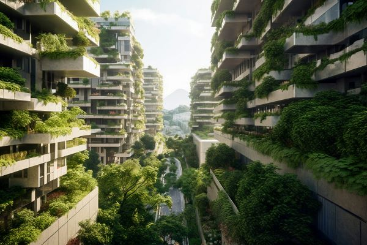

Video explica sobre a ODS 11.
Exemplo de cidades sustentáveis
São cidades planejadas e densenvolvidas através da tecnologia, o que permite soluções inteligentes e sustentáveis para os desafios que afetam as cidades de um modo geral, gerando assim uma melhor qualidade de vida as pessoas.